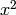
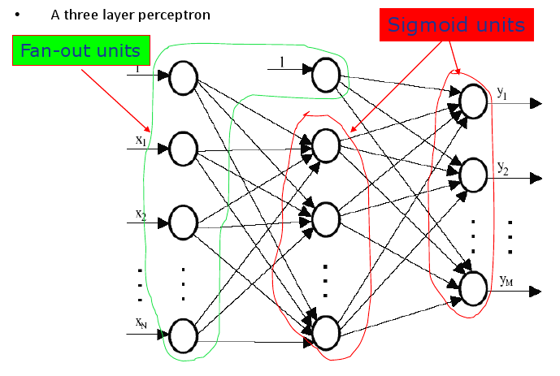
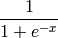

A single layer perceptron can only express linear (no  stuff - meaning no curves) decision surfaces.
A speech recognition task involves distinguishing 10 possible vowels all spoken in the context of “h_d” (i.e. hit, had, head, etc.). The input speech is represented by two numerical parameters obtained by spectral analysis of the sound, allowing easy visualisation of the decision surfaces over the 2D feature space.
Essentially lots of input values can be put through some black box function which we don’t have to know about which outputs 2 values allow the feature space to be 2D and visualisable.
We can build a multilayer network which will represent the highly nonlinear decision surfaces.
A 3 layer perceptron may look like this:
The initial Fan-out units in the first layer literally just push the input value to lots of other units in the next layer to be used as their input.
Architecturally there are input units (the ones on the very left), output units (the ones on the very right) and then hidden units (the ones which are not input or output units).
Typically each layer is fully connected to the next layer, meaning that a units output is one of the input for every unit in the next layer.
A sigmoid unit is very similar to a perceptron. It takes an n diminutional input and calculates a weighted sum. Then were the perceptron put that value through a threshold function and the ADLINE method just output the value directly the Sigmoid unit puts the output value through a signmoid function.
A sigmoid function looks like this and its values can range from 0 to 1:

The non-linearity allows for more values meaning that multilayer networks (which are used to divide the feature space non-linearly) can form non-linear decision surfaces more easily.